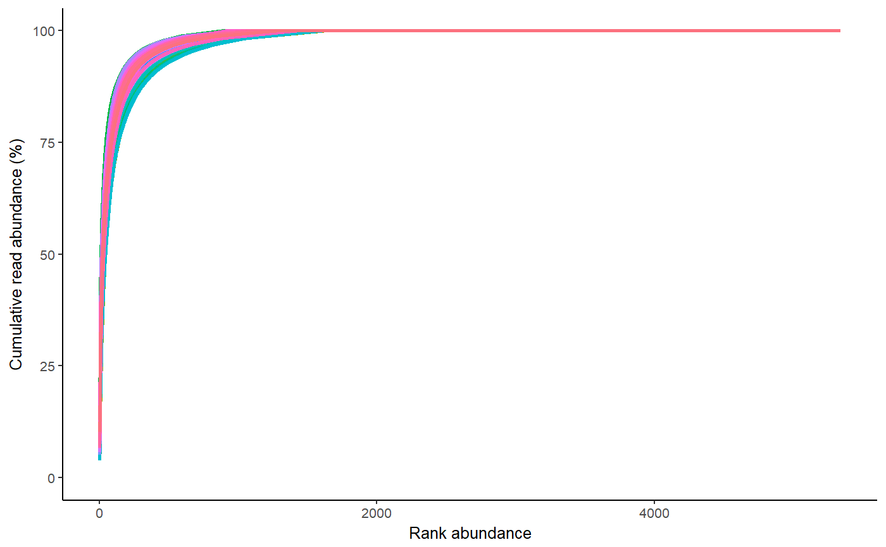

Generates a rank abundance curve (rank abundance vs cumulative read abundance).
amp_rankabundance(data)
| data | (required) Data list as loaded with |
|---|---|
| group_by | Group the samples by a variable in the metadata. |
| order_group | A vector to order the groups by. |
| plot_log | (logical) Log10-scale the x-axis. (default: |
| tax_add | Additional taxonomic level(s) to display, e.g. |
| tax_aggregate | The taxonomic level to aggregate the OTUs. (default: |
| tax_empty | How to show OTUs without taxonomic information. One of the following:
|
| tax_class | Converts a specific phylum to class level instead, e.g. |
| raw | (logical) Display raw input instead of converting to percentages. (default: |
| detailed_output | (logical) Return additional details or not. If |
A ggplot2 object. If detailed_output = TRUE a list with a ggplot2 object and additional data.
A rank abundance curve is used to assess the biodiversity by plotting the ranked abundances of the OTUs (rank 1 is the most abundant, rank 2 the second and so on) versus the cumulative read abundance of the particular OTU. The rank abundances of the OTUs can be grouped by any taxonomic level by the tax_aggregate argument, the default is per OTU. When the samples are grouped by the group_by argument, the average of the group is used.
#Load example data data("AalborgWWTPs") #Rank abundance plot amp_rankabundance(AalborgWWTPs)